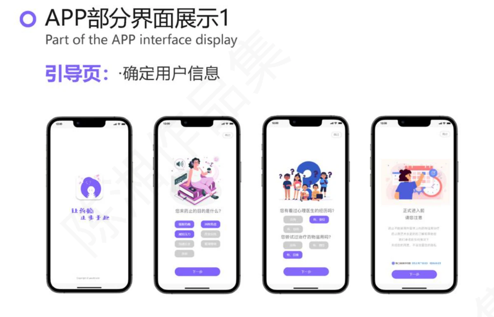
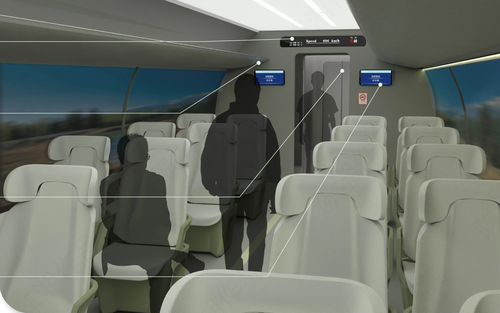
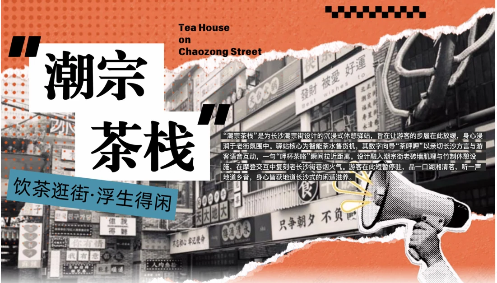
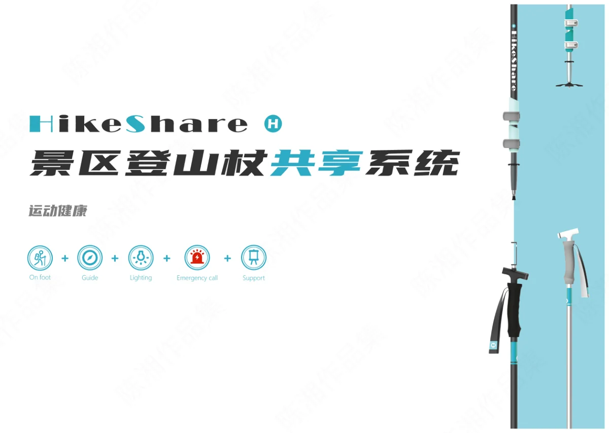
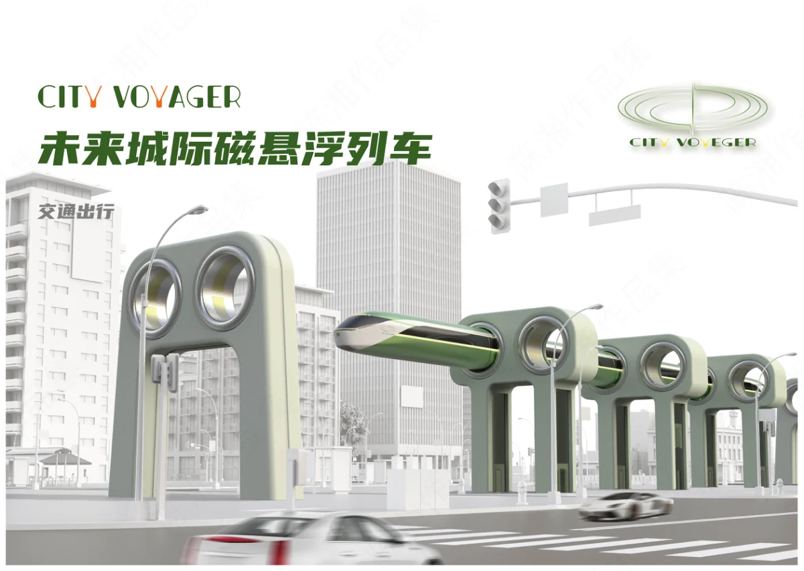
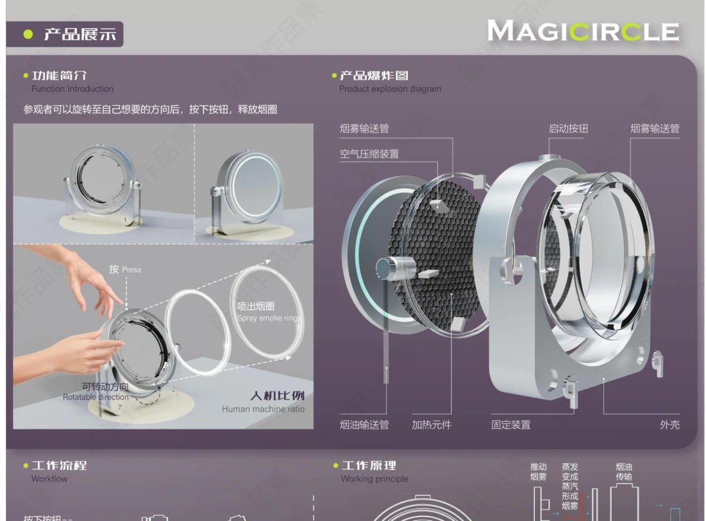
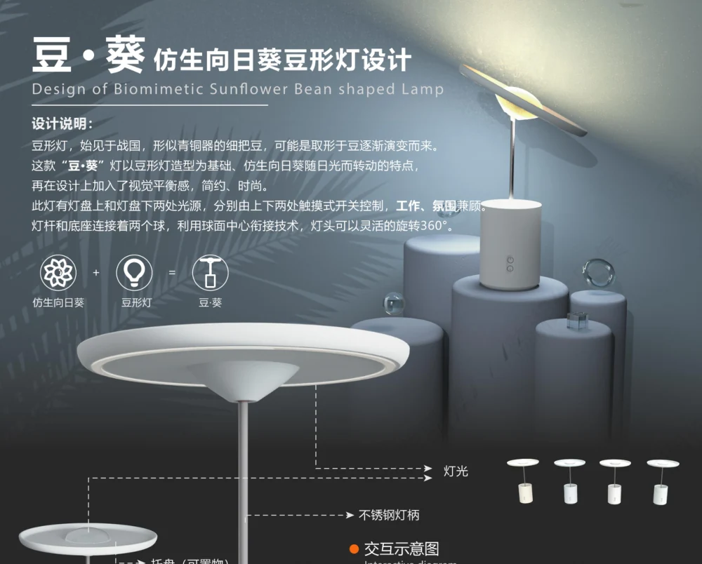
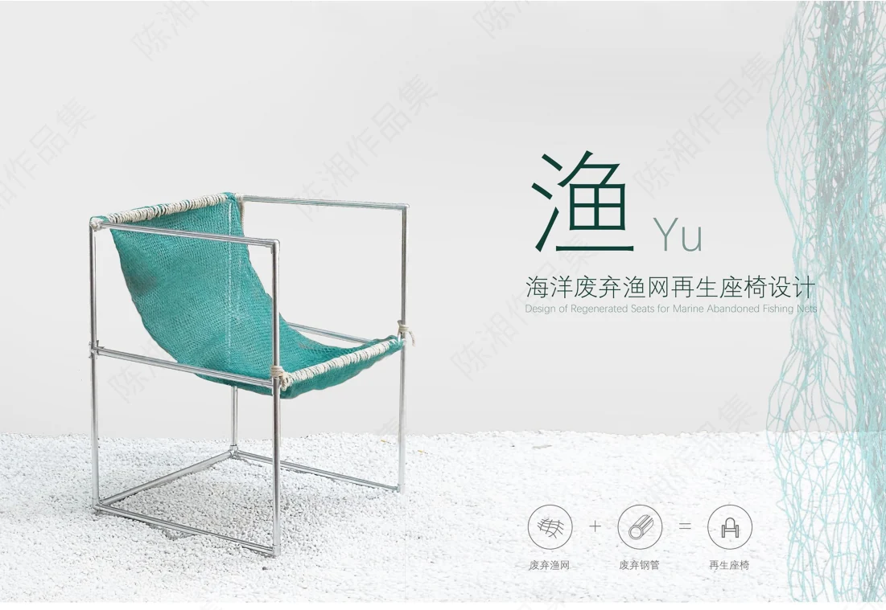
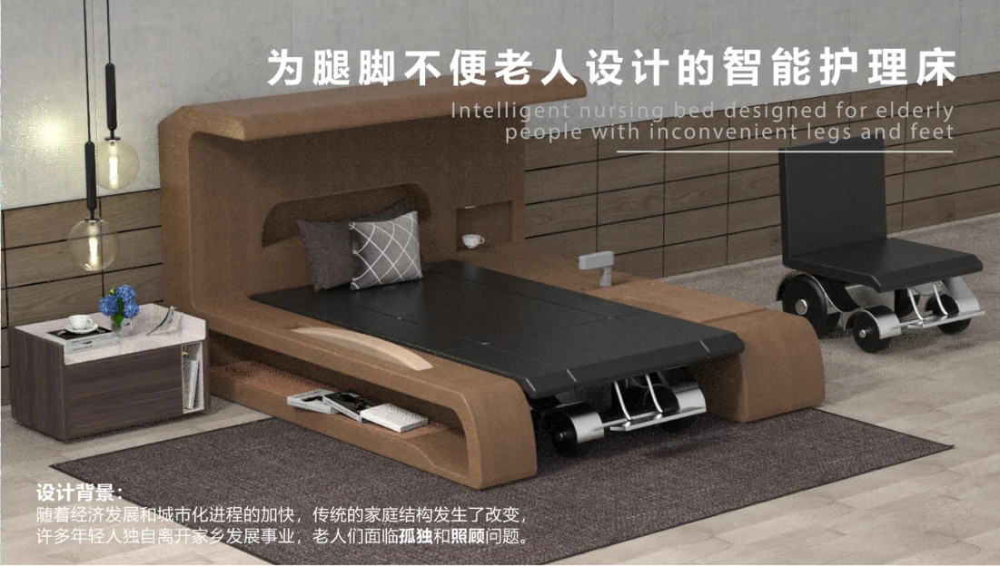
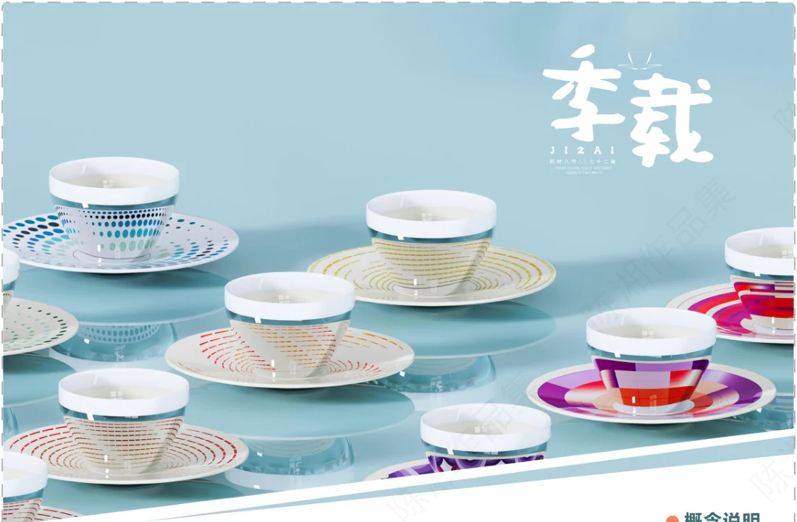

交互与服务 · YAOZHI
药止 · 艺术疗愈平台
以艺术体验与同伴支持回应药物成瘾人群的情绪需求。
查看项目详情 →
DESIGN PORTFOLIO
产品设计 · 交互体验 · AIGC 探索
Product Design · User Experience · Creative Exploration
↓ Scroll Down我是陈湘，现为中南大学设计学硕士研究生，本科就读产品设计。关注用户研究、产品体验与设计落地，也在探索 AIGC 如何支持创作和产品设计。
从用户访谈、需求拆解到原型设计、三维建模与生产资料交付，我希望把对人的观察，转化为清晰、可沟通的方案。在产品研发与 AIGC 相关实习中，我也积累了跨部门沟通与方案推进的经验。
中南大学 · 设计学硕士在读
中南大学 · 产品设计本科
985 / 211 · 在读
产品研发
梳理儿童红绿灯的按钮、灯光与语音规则；完成建模渲染和生产资料交付，对接厂家及跨部门协作，项目进入外包生产阶段。
AIGC 岗产品助理
制作官网高保真原型与交互说明，对接软件部完成改版上线；参与 AIGC 脚本、分镜、视频与海报创作。
主要承担行业背景与品牌竞品研究，参与报告和设计策略讨论，为后续设计提供参考。
整理约 200 张 CT 设备图片，设置参数并训练 LoRA 模型；经项目负责人审核后，由公司发布至 Liblib 平台。
Figma / Axure / 墨刀
Rhino / KeyShot / Photoshop / Illustrator
Office / LoRA 训练
显示全部 11 个项目

交互与服务 · YAOZHI
以艺术体验与同伴支持回应药物成瘾人群的情绪需求。
查看项目详情 →
交互与服务 · DAYIBU
把模块化衣物收纳与数字穿搭管理连接起来。
查看项目详情 →
交互与服务 · CHAOZONG TEA HOUSE
把长沙方言、街区游览与自助购茶串成一次在地体验。
查看项目详情 →
工业设计 · HIKESHARE
围绕景区徒步场景，探索共享登山杖的使用与配套设施。
查看项目详情 →
工业设计 · CABLE INSPECTION ROBOT
面向桥梁斜拉索作业，探索可变道的检测与维修设备形态。
查看项目详情 →
工业设计 · CITY VOYAGER
从列车外观到车厢内部，探索未来城际交通的出行体验。
查看项目详情 →
视觉与展陈 · MAGICIRCLE
将极光形成原理转化为可参与的科普展示体验。
查看项目详情 →
工业设计 · SUNFLOWER LAMP
以向日葵的形态与转动意象，探索灯具的功能和互动。
查看项目详情 →
工业设计 · YU / REGENERATED CHAIR
用废弃渔网与钢管，探索材料再生与日常家具的连接。
查看项目详情 →
工业设计 · ASSISTIVE CARE BED
围绕卧床与移动需求，思考老年人的居家照护体验。
查看项目详情 →
视觉与展陈 · JIZAI / SEASONAL TEAWARE
将四季与节气转化为杯碟纹样、配色和礼盒体验。
查看项目详情 →LET’S GET IN TOUCH